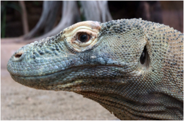
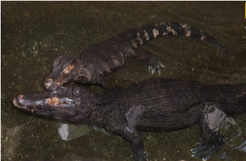
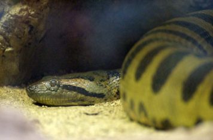
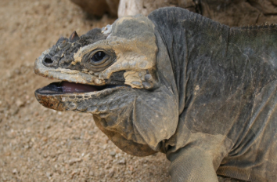
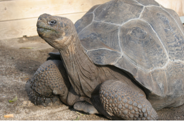
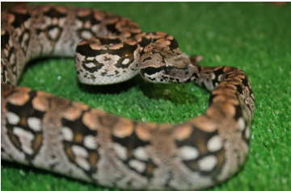

Los reptiles son animales vertebrados que se caracterizan por desplazarse reptando. Es decir, arrastrándose por el suelo, como la serpiente, el cocodrilo, el lagarto o la tortuga. Ello es debido a que originalmente vivían en medios acuáticos. La evolución los ha llevado a adaptarse totalmente a la vida terrestre. Aún así, habitualmente habitan en zonas con presencia de agua (pantanos, lagos, orillas de los ríos, etc.).
Generalmente, los reptiles tienen el cuerpo cubierto de una piel seca formada por escamas, respiran por pulmones y tienen la sangre fría. Es decir que su temperatura corporal varía en función de las condiciones climáticas. La mayoría son ovíparos: se reproducen mediante huevos que fecundan en el nido. En el mundo existen unas 8.000 especies de reptiles diferentes.
El Ecuador es el país con más diversidad de reptiles del mundo si tomamos en cuenta su área, pues cuenta con aproximadamente tres especies por cada 2000 kilómetros cuadrados. Hasta la fecha se han registrado 473 especies de reptiles, que incluyen 33 especies de tortugas, 5 cocodrilos y caimanes, 3 anfisbénidos, 195 lagartijas y 237 serpientes.
Reptiles en Zoo Animals
Existen una gran variedad de reptiles entre ellos estan:
-
Dragon de Comodo

Caiman de cuvier

-
Anaconda comun

-
Iguana rinoceronte

-
Tortuga gigante de Galapagos

-
Boa terrestre de dumeril
